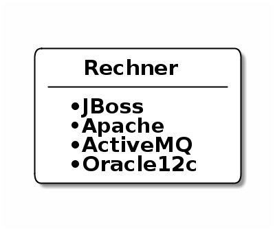
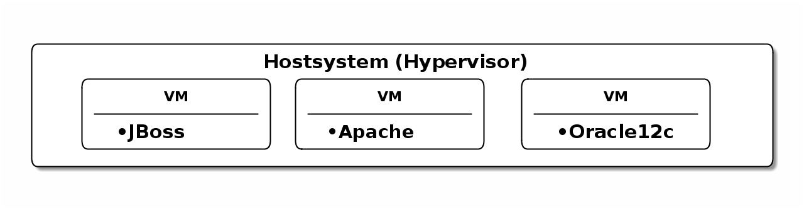
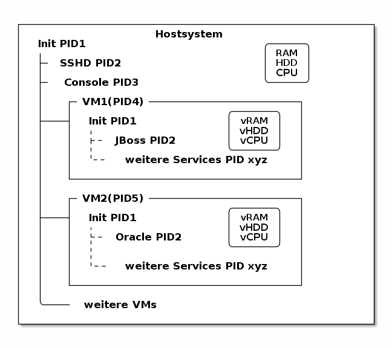
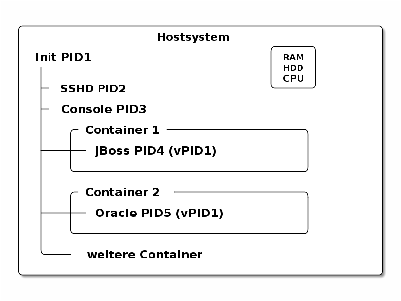
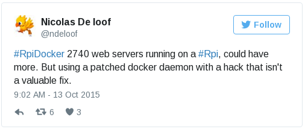
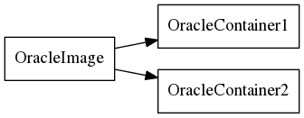

- Softwaredeployments früher und heute
- Was ist Docker?
- Docker commands
- Weitere Technologien
Übersicht
Übersicht
Überblick Deploymentarten
Überblick Deploymentarten
Bare metal, Virtuelle Maschinen und Prozessisolierung
Bare Metal
Bare Metal
- Software läuft als normaler Benutzer (idealerweise 1 Benutzer pro Software)
- Auf dem Laptop eher alle Software in einem Account
- Das System "vermüllt", es gibt Sicherheitsrisiken, Abhängigkeiten zwischen Bibliotheken, etc. 😢
- Upgraden ist erschwert, schwer automatisierbar 😢

Virtualisierung
Virtualisierung
- Software läuft komplett isoliert in einem virtuellen Rechner
- Das Hostsystem ist weiter unabhängig von der Software die auf dem System läuft
- Softwareupgrades sind isoliert, Abhängigkeiten aufgelöst, Softwareprobleme isoliert, voll automatisierbar 😊
- Erhöhte Komplexität, Performanceeinbusse, geringe Service "Density"😢

Prozessisolierung
Prozessisolierung
- ähnlich einer Sandbox wird bei Containern ein Prozess von allen anderen Prozessen abgeschottet
- Namespaces: Linux Kernel Technologie seit 2002 (mount namespace), vollständig seit 2013
- Prozessebene
- Benutzer
- Netzwerk
- HDD
- Interprocess Communication (ipc)
- Hostnames
- Control Groups:
- Entwickelt von Google und Bestandteil von Linux seit 2008
- Wird verwendet um CPU, RAM, Disk und Netzwerk limitieren zu können
- Ähnliche Technologien: FreeBSD Jails, chroot(), Solaris Zones
- Prozesse sind unabhängig voneinaner, Resourcenbedarf und auslastung ist optimal 😊
- Voll automatisierbar, schnell zu bauen, extrem schneller Start
- Fehlerhafter Betrieb der Containersoftware (Docker) in Verbindung mit Linux Kernel Bugs/Exploits sind nicht so sicher wie VMs 😢
- Beschränkt auf den Kernel des Hostsystems 😢
Prozessisolierung #2
Prozessisolierung #2
Namespaces und Control Groups bieten also alle Vorteiler einer VM, ohne den hohen Resourcenbedarf!
Im Wesentlichen kann das Hostsystem wieder wie bei "Bare Metal" voll ausgelastet werden.

Systemprozesse in VMs
Systemprozesse in VMs
- Prozesse unter Linux/POSIX1

Systemprozesse in Containern
Systemprozesse in Containern

Was ist Docker?
Was ist Docker?
- Entwickelt von Docker Inc.
- Zusammenfassung der erwähnten Technologien in ein einfach zu bediendes Softwarepaket
- leichtgewichtige Virtualisierung -> Prozessisolierung
- basierend auf Linux Kernel Technologien
- Isolierung Dateisystem (Layers und Volumes)
- Isolierung CPU + RAM
- Isolierung Netzwerk
- Zusätzlich:
- Definition eines Containerformats
- Bereitstellung eines Daemons zum Steuern der laufenden Container
- Containermanagement (Layer, Dockerfile, Volumes, Netzwerk)
Effizienz
Effizienz
Sinnvoll oder nicht…

- Awesome: Custom Development verteilter Systeme
- Entwicklung von Ansible Scripten für Kunden basierend auf deren Server Architektur
- Prod-Umgebung: 100+ VMs mit ca. 10 verschiedenen VM-Typen
- Test-Umgebung: 20+ VMs auf 5+ sehr teuren und großen Servern
- Dev-Umgebung mit Docker: 20+ Container auf einem Laptop!
Docker Images vs. Containers
Docker Images vs. Containers
- Ein Image ist ein die gepackte Version einer Software, inkl. allen Softwareabhängigkeiten
- Es enthält das komplette Dateisystem (/usr, /bin, /var, etc.)
- Mit docker run wird aus einem Image ein Container
- Docker sorgt dafür, dass der Prozess mit den richtigen Namespaces gestartet wird
- Besonderheit bei Docker ist dabei, dass mittels "Copy-On-Write" Mechanismus nur die Änderungen die zwischen dem Image und dem laufenden Container auf die Festplatte geschrieben werden (Layer funktionieren genau so)
- Container ist somit die konkrete Instanz eines gestarteten Images

docker daemon
docker daemon
- Docker besteht aus mehreren Prozessen, ein Daemon der die Kommandos entgegennimmt
[sebastian@calculon➔ ~] ps aux | grep docker root 1317 0.0 0.1 703284 40772 ? Ssl Jan25 0:59 /usr/bin/dockerd -H fd:// root 1527 0.0 0.0 605296 9716 ? Ssl Jan25 0:35 docker-containerd -l unix:///var/run/docker/libcontainerd/docker-containerd.sock --metrics-interval=0 --start-timeout 2m --state-dir /var/run/docker/libcontainerd/containerd --shim docker-containerd-shim --runtime docker-runc
- docker info
[sebastian@calculon➔ ~] docker info Containers: 9 Running: 0 Paused: 0 Stopped: 9 Images: 20 .....
docker help (Auszug)
docker help (Auszug)
[sebastian@calculon➔ ~] docker help Usage: docker COMMAND Commands: attach Attach to a running container build Build an image from a Dockerfile commit Create a new image from a container's changes exec Run a command in a running container images List images info Display system-wide information inspect Return low-level information on Docker objects kill Kill one or more running containers logs Fetch the logs of a container ps List containers pull Pull an image or a repository from a registry push Push an image or a repository to a registry restart Restart one or more containers rm Remove one or more containers rmi Remove one or more images run Run a command in a new container search Search the Docker Hub for images stop Stop one or more running containers top Display the running processes of a container
Docker Registry + docker search
Docker Registry + docker search
- Docker Inc. hosted eine öffentliche Registry unter http://store.docker.com (ehemals http://hub.docker.com)
- docker search ist die Kommandozeilenvariante
[sebastian@calculon➔ ~] docker search jenkins NAME DESCRIPTION STARS OFFICIAL AUTOMATED jenkins Official Jenkins Docker image 2442 [OK] stephenreed/jenkins-java8-maven-git Automated build that provides a continuous... 51 [OK] killercentury/jenkins-dind Generic Jenkins CI with Docker Engine and ... 24 [OK] aespinosa/jenkins Sets up a container with jenkins installed... 22 [OK] cloudbees/jenkins-enterprise CloudBees Jenkins Enterprise (Rolling rele... 15 [OK]
docker run
docker run
- docker run wird benutzt um einen Container zu starten
- Wenn das Image lokal nicht existiert, lädt docker das Image aus der öffentlichen Registry
[sebastian@calculon➔ ~] docker run -ti alpine:edge /bin/sh
Unable to find image 'alpine:edge' locally
edge: Pulling from library/alpine
70d475d0fb0e: Pull complete
Digest: sha256:3129b91dd67b7d690f827655cb90006ce6a526477ad1ce7a4961b0bf1c7bbb68
Status: Downloaded newer image for alpine:edge
/ # cat /etc/alpine-release
3.5.0
/ # ps
PID USER TIME COMMAND
1 root 0:00 /bin/sh
13 root 0:00 ps
- docker ps zeigt die laufenden Container
[sebastian@calculon➔ ~] docker ps CONTAINER ID IMAGE COMMAND CREATED STATUS PORTS NAMES a7ebd808d959 jenkins "/bin/tini -- /usr..." 18 minutes ago Up 18 minutes 50000/tcp, 0.0.0.0:32768->8080/tcp cocky_kilby
Diff im Dateisystem
Diff im Dateisystem
- startet man einen Container werden nur die Änderungen geschrieben1
[sebastian@calculon➔ ~] docker run -ti alpine:edge /bin/sh / # touch TEST_DATEI / # touch "hello world"
- Änderungen im Dateisystem werden dabei im "UpperDir" (siehe docker inspect) gespeichert:
[sebastian@calculon➔ ~] docker inspect pedantic_beaver
....
"GraphDriver": {
"Name": "overlay2",
"Data": {
"UpperDir": "/var/lib/docker/overlay2/4a2794f5fcfcfe71338d2282aad0b8fbab3a9435e220f4eda65cc571c61b5be2/diff",
....
[sebastian@calculon➔ ~] sudo ls -la /var/lib/docker/overlay2/4a2794f5fcfcfe71338d2282aad0b8fbab3a9435e220f4eda65cc571c61b5be2/diff/
insgesamt 0
drwxr-xr-x 3 root root 52 Jan 26 09:13 .
drwx------ 5 root root 64 Jan 26 09:12 ..
-rw-r--r-- 1 root root 0 Jan 26 09:13 hello world
drwx------ 2 root root 25 Jan 26 09:12 root
-rw-r--r-- 1 root root 0 Jan 26 09:12 TEST_DATEI
docker diff
docker diff
- Das diff kann man sich auch mit docker diff anschauen
[sebastian@calculon➔ ~] docker diff pedantic_beaver A /TEST_DATEI A /hello world C /root A /root/.ash_history
docker stop, kill + restart
docker stop, kill + restart
- Mit docker ps und docker kill können Container gestopped werden
- docker ps -a zeigt auch die gestoppten Container
[sebastian@calculon➔ ~] docker ps -a CONTAINER ID IMAGE COMMAND CREATED STATUS PORTS NAMES 92989419d1ae alpine:edge "/bin/sh" 4 minutes ago Exited (137) 14 seconds ago dazzling_curran a7ebd808d959 jenkins "/bin/tini -- /usr..." 11 minutes ago Up 11 minutes 50000/tcp, 0.0.0.0:32768->8080/tcp cocky_kilby bcc11a719248 alpine "/bin/sh" 51 minutes ago Exited (0) 50 minutes ago sharp_carson 693c0649d9a2 alpine "/bin/sh" 51 minutes ago Exited (0) 51 minutes ago amazing_wright
- Mit docker restart kann man den Container wieder starten
- Achtung: Dabei können sich dynamisch zugewiesene Ports ändern!
docker images + rm + rmi
docker images + rm + rmi
- Wie managed man nun Images und Container?
- docker ps -a & docker images zum Anzeigen von lokalen Containern und Images
- docker rm & docker rmi zum Löschen lokaler Container und Images
docker run - Ports
docker run - Ports
- startet man einen Container mit Netzwerkservice werden standardmäßig keine Ports durchgereicht1
[sebastian@calculon➔ ~] docker run -d jenkins 99614183b12e4e65b89e8f996a810d064b53e265d7bf4e30dddaf7d203678c0e [sebastian@calculon➔ ~] docker port 9961 [sebastian@calculon➔ ~]
- Container definieren Ports die "exposed" sein können, z.B. Port 8080 bei Jenkins
[sebastian@calculon➔ ~] docker inspect -f '{{ .Config.ExposedPorts }}' jenkins
map[50000/tcp:{} 8080/tcp:{}]
- Um Docker einen freien Port aussuchen zu lassen gibt man nur den Containerport an
[sebastian@calculon➔ ~] docker run -d -p 8080 jenkins 1db61c49a0b614199487ee024e4bc0519ee30e1d9b44e371d16f89722a9fdf7f [sebastian@calculon➔ ~] docker port 1db6 8080/tcp -> 0.0.0.0:32770 [sebastian@calculon➔ ~] telnet localhost 32770 Trying 127.0.0.1... Connected to localhost. Escape character is '^]'.
docker run - Ports
docker run - Ports
- Um einen Port selbst zu wählen, kann man das Mapping mit -p <Hostport>:<Containerport> angeben
- mehrere Portmappings sind möglich
[sebastian@calculon➔ ~] docker run -d -p 8080:8080 -p 20000:50000 jenkins aaa099544c3d8b4a7053e42abc1dc24e5f0d085c727aaa13492ab32bf129d427 [sebastian@calculon➔ ~] telnet 0 20000 Trying 0.0.0.0... Connected to 0. Escape character is '^]'. [sebastian@calculon➔ ~] telnet 0 8080 Trying 0.0.0.0... Connected to 0. Escape character is '^]'.
docker build
docker build
- docker build wird benutzt um eigene Images zu bauen
- Dafür benötigen wir ein leeres Verzeichnis mit einer Datei names Dockerfile
- Referenz: https://docs.docker.com/engine/reference/builder/#/from
- Das Dockerfile enthält ähnlich wie ein Bash-Script eine Reihenfolge an Befehlen um basierend auf einem Base-Image ein eigenes Image zu erstellen
Dann versuchen wir es mal…

docker build
docker build
- Wir benötigen ein Baseimage
- Am Besten mit JAVA schon integriert..
[sebastian@calculon➔ ~] docker search openjdk NAME DESCRIPTION STARS OFFICIAL AUTOMATED openjdk OpenJDK is an open-source implementation o... 266 [OK]
- Das benutzen wir im Dockerfile
FROM openjdk:jre-alpine
docker build
docker build
- Dateien werden mit dem Kommando ADD im Container hinzugefügt
- Das funktioniert mit URLs… (wird bei jedem 'docker build' neu geladen)
ADD https://s3.amazonaws.com/Minecraft.Download/versions/1.11.2/minecraft_server.1.11.2.jar /opt/mc/mcserver.jar
- Und mit lokalen Dateien…
ADD minecraft_server.1.11.2.jar /opt/mc/mcserver.jar
docker build
docker build
- Das Kommando CMD bestimmt wie der Container gestartet wird
- Das Kommando kann beim Container start überschrieben werden!
CMD java -Xmx1024M -Xms1024M -jar /opt/mc/mcserver.jar nogui
- Damit startet schon einmal der Container und der Server
docker build
docker build
- Mit RUN können ganz normale Shell Befehle ausgeführt werden
RUN mkdir -p /opt/mc-data RUN echo "eula=true" > /opt/mc-data/eula.txt
- Und WORKDIR gibt das Working Directory an, welches für den Befehl ausgeführt werden soll
WORKDIR /opt/mc-data
- EXPOSE gibt an, welche Ports das Image zur Verfügung stellt
EXPOSE 25565
- Der Minecraft Server sollte jetzt als Container laufen
docker build . -t mc-server docker run -p 25565 mc-server docker ps CONTAINER ID IMAGE COMMAND CREATED STATUS PORTS NAMES e76c3cee9a19 mc-server "/bin/sh -c 'java ..." 14 seconds ago Up 14 seconds 0.0.0.0:32774->25565/tcp hungry_shannon
docker pull
docker pull
- Mittels docker pull besteht auch die Möglichkeit Images von privaten Registrys herunterzuladen
- Dafür muss sich der Servername + Port im Imagenamen befinden
[sebastian@calculon➔ ~] docker images REPOSITORY TAG IMAGE ID CREATED SIZE mc-server latest c2e5c1d0c9c6 37 minutes ago 118 MB mcs latest c2e5c1d0c9c6 37 minutes ago 118 MB <none> <none> 5237529adf0d 38 minutes ago 118 MB <none> <none> fa7f797c73d2 45 hours ago 181 MB jenkins latest 59d580851733 8 days ago 715 MB 10.10.66.90:5000/trinity/oracle initialized 00d8d38de3d6 8 days ago 8.06 GB
docker push
docker push
- Mittels docker push kann man Images in eine Registry laden
- Funktioniert auf dem offiziellen Dockerhub oder der privaten Registry
Volumes
Volumes
- WICHTIG: Daten die in Dockercontainern geschrieben werden, sind flüchtig!
- Man kann einen Container immer wieder starten und behält seine Daten
- Richtiger Weg ist es aber, im Container nur die statischen Binaries zu verwenden und alles was persistiert werden soll in ein Volume zu packen
- Volumes werden im Dockerfile mit VOLUME beschrieben
VOLUME /opt/mc-data
- Sie müssen bei docker run mitgegeben werden
docker run -p 25565 -v my-mc-data:/opt/mc-data/ mcs
- Es wird der Inhalt aus dem Image in ein Volume namens 'my-mc-data' kopiert
- Dieses Volume kann dann unabhängig vom Container beschrieben und wiederverwendet werden
docker volume ls + inspect
docker volume ls + inspect
- Volumes sind separate Verzeichnisse und können mit docker volume gemanaged werden
[sebastian@calculon➔ ~] docker volume ls
DRIVER VOLUME NAME
local my-mc-data
[sebastian@calculon➔ ~] docker volume inspect my-mc-data
[
{
"Driver": "local",
"Labels": null,
"Mountpoint": "/var/lib/docker/volumes/my-mc-data/_data",
"Name": "my-mc-data",
"Options": {},
"Scope": "local"
}
]
docker networking
docker networking
- Container kann man miteinander verlinken, so dass sie miteinander kommunizieren können: https://docs.docker.com/engine/userguide/networking/default_network/dockerlinks/
- Linking ist aber deprecated
- Abgelöst durch eine umfassendere Networking Lösung
- https://docs.docker.com/engine/userguide/networking/
docker-compose
docker-compose
- Kann verwendet werden um einfach mit YAML komplexere Umgebungen zu beschreiben und Container zu managen
version: '2'
services:
jenkins:
image: jenkins
ports:
- "8080:8080"
links:
- redis
minecraft-server:
volumes:
- my-mc-data:/opt/mc-data
build: mcserver
volumes:
my-mc-data: {}
Orchestrierung
Orchestrierung
- Die komplexere Ochestrierung von Containern über mehrere Hosts und Netzwerke mit Auto-Scaling, Fallbacks, Loadbalancing, etc. wird von anderen Projekten abgedeckt
- Docker Swarm, Kubernetes, Mesos, OpenShift
Zusammenfassung
Zusammenfassung
- Schnell reproduzierbare Umgebungen
- Schnell aufsetzbar
- kleine und effiziente Container
- Microservices ohne Container heutzutage kaum denkbar
- kaum ignorierbare Technologie der "Zukunft"
Docker Toolbox
Docker Toolbox
- For Windows:
- Bereitstellung einer minimalen VM für den benötigten Linuxkernel (Virtualbox basiert)
- For Mac:
- Bereitstellung einer minimalen VM, basierend auf Hyperkit/xhyve
- xhyve scheint langsamer als Virtualbox: https://www.reddit.com/r/docker/comments/59u1b8/why_is_docker_so_slow_on_mac/
- Workaround: Docker Machine mit Virtualbox verwenden
- Bereitstellung einer minimalen VM, basierend auf Hyperkit/xhyve
Fragen?
Fragen?
Danke! :-)